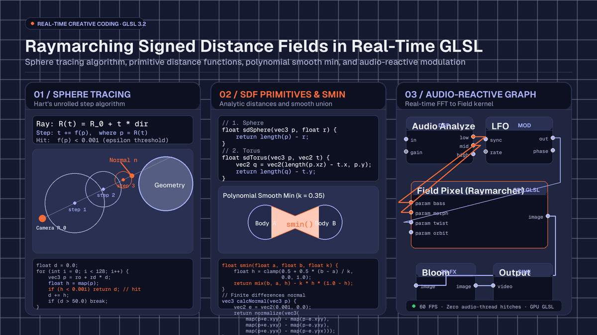

Creative
Raymarching signed distance fields in real-time GLSL
How to build a real-time raymarcher in GLSL: sphere tracing algorithm, primitive distance functions, smooth blending, normals, and audio-reactive scenes.

on this page
- What is sphere tracing and how the ray steps
- Primary SDF geometric primitives
- Constructive solid geometry and polynomial smooth blending
- Surface normals and Blinn-Phong lighting
- Building an audio-reactive raymarcher in Infinite
- Performance optimisation for real-time framerates
- Summary and where to experiment next
Building a system for raymarching signed distance fields in real-time GLSL provides a powerful alternative to traditional polygonal rasterisation. While standard 3D rendering pipelines rely on vertex buffers, index arrays, and triangle meshes, raymarching computes three-dimensional surfaces procedurally inside a fragment shader. Every geometric volume, smooth Boolean blend, and fractal surface is evaluated mathematically for every individual pixel on the screen.
In modern audiovisual software such as Infinite, raymarching allows visual artists and audio producers to bridge the gap between mathematical graphics and low-latency audio synthesis. Because signed distance fields are defined purely through mathematical equations, parameters such as scale, repetition, twisting, and morphing can be cabled directly to live audio frequency bands, envelope followers, and LFO modulators without regenerating vertex buffers or stalling the graphics pipeline.
Here is an architectural walkthrough of how sphere tracing works, how to construct signed distance functions (SDFs) for common 3D primitives, how to blend geometry organically with polynomial smooth minimums, and how to wire a complete audio-reactive raymarching pipeline inside Infinite.

What is sphere tracing and how the ray steps
Traditional raymarching steps through 3D space along a view ray using small, uniform increments. While simple to implement, uniform stepping suffers from severe trade-offs: if the step size is too large, the ray can skip thin geometry entirely, producing visual holes and aliasing artifacts; if the step size is too small, performance drops precipitously.
Sphere tracing, introduced by John C. Hart in 1996, solves this inefficiency by exploiting the fundamental mathematical property of a signed distance field.
A signed distance function f(p) takes any point p in three-dimensional space and returns the shortest Euclidean distance from that point to the nearest surface in the scene:
f(p) > 0 : The point p is located outside the object.
f(p) = 0 : The point p lies exactly on the boundary surface.
f(p) < 0 : The point p is located inside the object.Because f(p) yields the absolute minimum distance to the closest boundary, a sphere of radius R = f(p) centred at p is guaranteed to be completely empty of any geometry. Therefore, a view ray starting at p can safely advance along its direction vector by the full distance R in a single step without any risk of overshooting or penetrating a surface.
To construct the view ray for each pixel, we map normalised screen coordinates uv into a camera origin ro and a normalised direction vector rd:
vec3 rayDirection(vec2 uv, vec3 eye, vec3 target, float fov) {
vec3 forward = normalize(target - eye);
vec3 right = normalize(cross(forward, vec3(0.0, 1.0, 0.0)));
vec3 up = cross(right, forward);
return normalize(uv.x * right + uv.y * up + forward * fov);
}With the ray direction established, the sphere tracing loop evaluates the scene's signed distance function iteratively:
float raymarch(vec3 ro, vec3 rd, float minDistance, float maxDistance) {
float distanceTravelled = minDistance;
for (int step = 0; step < 128; step++) {
vec3 currentPosition = ro + rd * distanceTravelled;
float distanceToSurface = map(currentPosition);
// Surface hit detected within threshold epsilon
if (distanceToSurface < 0.001) {
return distanceTravelled;
}
distanceTravelled += distanceToSurface;
// Ray escaped into empty background
if (distanceTravelled >= maxDistance) {
break;
}
}
return -1.0; // Miss
}Notice how this algorithm naturally adapts to the spatial complexity of the scene: in vast regions of open space, the distance to the nearest surface is large, allowing the ray to take massive strides across thousands of units in a handful of steps. Near surfaces and delicate geometric silhouettes, the steps automatically shrink to sub-millimetre precision, capturing razor-sharp edges.
Primary SDF geometric primitives
Every scene evaluated in a raymarcher is described by an overall distance function, typically named map(vec3 p). Complex scenes are constructed by combining simple mathematical primitives.
Here are the canonical signed distance functions for fundamental 3D solids:
1. Sphere
The sphere is the simplest primitive in distance field mathematics. The distance from point p to the surface of a sphere centred at the origin with radius r equals the Euclidean length of p minus r:
float sdSphere(vec3 p, float r) {
return length(p) - r;
}2. Box
An axis-aligned box with half-dimensions b requires computing the component-wise distance outside the boundary and combining it with the internal signed distance:
float sdBox(vec3 p, vec3 b) {
vec3 q = abs(p) - b;
return length(max(q, 0.0)) + min(max(q.x, max(q.y, q.z)), 0.0);
}3. Torus
A torus lying on the XZ plane with major radius t.x and minor tube radius t.y is derived by projecting p onto the circular core:
float sdTorus(vec3 p, vec2 t) {
vec2 q = vec2(length(p.xz) - t.x, p.y);
return length(q) - t.y;
}4. Cylinder
A vertical cylinder centred along the Y axis with radius h.x and half-height h.y:
float sdCylinder(vec3 p, vec2 h) {
vec2 d = abs(vec2(length(p.xz), p.y)) - h;
return min(max(d.x, d.y), 0.0) + length(max(d, 0.0));
}Spatial domain operations
One of the great advantages of signed distance fields over triangle meshes is that geometric transformations are performed by transforming the input coordinate space p before evaluating the primitive, rather than modifying millions of stored vertices:
- Translation: Evaluating
sdSphere(p - offset, r)moves the sphere to positionoffset. - Rotation: Multiplying
pby a rotation matrix rotates the geometry. For example, rotating around the Y axis by angletheta:
``glsl vec3 rotateY(vec3 p, float theta) { float c = cos(theta); float s = sin(theta); return vec3(c * p.x + s * p.z, p.y, -s * p.x + c * p.z); } ``
- Infinite domain repetition: By wrapping coordinates with modulo arithmetic, an artist can duplicate an object infinitely across 3D space with zero memory cost:
``glsl vec3 repeatDomain(vec3 p, vec3 cellSpacing) { return mod(p + 0.5 * cellSpacing, cellSpacing) - 0.5 * cellSpacing; } ``
Constructive solid geometry and polynomial smooth blending
Constructive Solid Geometry (CSG) combines multiple primitive distance fields using Boolean logic. In signed distance fields, Boolean operations map directly to basic arithmetic functions:
float opUnion(float d1, float d2) { return min(d1, d2); }
float opIntersection(float d1, float d2) { return max(d1, d2); }
float opSubtraction(float d1, float d2) { return max(-d1, d2); }While standard CSG produces hard, sharp seams where surfaces intersect, creative coding and natural forms frequently demand organic, continuous transitions.
The polynomial smooth minimum, formulated by Inigo Quilez, creates an organic fillet between two distance fields. The smoothing factor k controls the radius of the organic bridge:
float opSmoothUnion(float d1, float d2, float k) {
float h = clamp(0.5 + 0.5 * (d2 - d1) / k, 0.0, 1.0);
return mix(d2, d1, h) - k * h * (1.0 - h);
}
float opSmoothSubtraction(float d1, float d2, float k) {
float h = clamp(0.5 - 0.5 * (d2 + d1) / k, 0.0, 1.0);
return mix(d2, -d1, h) + k * h * (1.0 - h);
}When two spheres or geometric shapes pass through one another with opSmoothUnion, they blend seamlessly like drops of liquid mercury or metaballs. In live audiovisual performance, modulating the parameter k with audio amplitude causes sharp geometric structures to dissolve into fluid organic masses on heavy musical accents.
Surface normals and Blinn-Phong lighting
Because signed distance fields do not carry pre-computed vertex normals, we estimate the surface normal vector directly from the spatial gradient of the distance field.
The gradient ∇f(p) points in the direction where the distance increases most rapidly. On a surface boundary where f(p) = 0, this gradient vector points directly perpendicular to the surface. We approximate the gradient using finite differences with a tiny offset e:
vec3 calculateNormal(vec3 p) {
vec2 e = vec2(0.001, 0.0);
return normalize(vec3(
map(p + e.xyy) - map(p - e.xyy),
map(p + e.yxy) - map(p - e.yxy),
map(p + e.yyx) - map(p - e.yyx)
));
}This central differences technique samples the scene six times around point p and yields a smooth, accurate unit normal.
Shading and illumination
With the surface normal normal and view direction viewDir calculated, we compute standard Blinn-Phong shading:
vec3 computeLighting(vec3 p, vec3 normal, vec3 viewDir, vec3 lightPos, vec3 baseColour) {
vec3 lightDir = normalize(lightPos - p);
vec3 halfwayDir = normalize(lightDir + viewDir);
// Ambient illumination
vec3 ambient = 0.15 * baseColour;
// Diffuse Lambertian reflection
float diff = max(dot(normal, lightDir), 0.0);
vec3 diffuse = diff * baseColour;
// Specular highlight
float spec = pow(max(dot(normal, halfwayDir), 0.0), 32.0);
vec3 specular = vec3(0.8) * spec;
// Soft shadow attenuation
float shadow = computeSoftShadow(p + normal * 0.002, lightDir, 0.02, 10.0, 16.0);
return ambient + (diffuse + specular) * shadow;
}Raymarched soft shadows
Raymarching offers an elegant way to compute realistic penumbra soft shadows with zero shadow maps. As a secondary shadow ray travels from surface point p toward the light source, we record the minimum ratio of distance to travel distance:
float computeSoftShadow(vec3 ro, vec3 rd, float mint, float maxt, float k) {
float res = 1.0;
float t = mint;
for (int i = 0; i < 48; i++) {
float h = map(ro + rd * t);
if (h < 0.0005) {
return 0.0; // In full shadow
}
res = min(res, k * h / t);
t += clamp(h, 0.02, 0.25);
if (t >= maxt) {
break;
}
}
return clamp(res, 0.0, 1.0);
}The parameter k controls shadow softness: smaller values yield wide, blurry penumbras resembling diffuse studio lighting, while larger values produce crisp direct sunlight.
Building an audio-reactive raymarcher in Infinite
To run this pipeline inside Infinite, we write our complete GLSL kernel inside a Field Pixel node. Infinite's built-in Field language compiles short text kernels into native GPU fragment shaders without extra wrapper boilerplate.
1. Declaring modulatable parameters
In Field, parameters are declared directly at the top of the kernel script. Each parameter automatically turns into an interactive knob on the node and exposes an input pin on the canvas:
param float u_bass = 0.0 [0.0, 1.0]
param float u_morph = 0.0 [0.0, 1.0]
param float u_twist = 0.5 [0.0, 2.0]
param float u_smooth = 0.3 [0.05, 1.0]2. Defining the scene distance map
We define a dynamic scene combining a central sphere, a rotating torus, and an organic twist distortion:
float map(vec3 p) {
// Audio-reactive spatial twist
float angle = p.y * u_twist + t * 0.4;
float cosA = cos(angle);
float sinA = sin(angle);
p.xz = mat2(cosA, -sinA, sinA, cosA) * p.xz;
// Primitive 1: Central pulsing sphere driven by bass
float sphereRadius = 1.0 + u_bass * 0.45;
float dSphere = sdSphere(p, sphereRadius);
// Primitive 2: Outer torus morphed by midrange frequencies
vec2 torusDims = mix(vec2(1.8, 0.35), vec2(2.2, 0.15), u_morph);
float dTorus = sdTorus(p, torusDims);
// Smooth organic blend
return opSmoothUnion(dSphere, dTorus, u_smooth);
}3. Assembling the canvas patch
The visual half of the patch connects as follows:
- Add a Field Pixel node and paste the raymarching kernel.
- Cable the image output pin of Field Pixel into a Bloom node to introduce subtle optical glow on high specular reflections.
- Cable the output of Bloom into the Output node to send the rendered picture to your display or projector.
The audio half of the patch provides the real-time modulation streams:
- Add an Analog or Wavetable synth node, or connect live audio through an Audio In node.
- Route the audio signal to an Audio Out node for playback and into an Audio Analyze node.
- The Audio Analyze node decomposes the audio stream into frequency bands:
low,mid, andhigh. - Cable the
lowpin of Audio Analyze to theu_bassinput pin of Field Pixel. When a kick drum hits, the central sphere expands dynamically. - Cable the
midpin of Audio Analyze tou_morph. Snare hits and synth melodies cause the torus geometry to morph in radius and thickness. - Add an LFO node configured to a slow sine wave and cable its output into
u_twist. This guarantees that the geometric lattice continually drifts and rotates even during quiet musical breakdowns.
For ready-to-use patch setups, browse the free templates in the Library.
Performance optimisation for real-time framerates
Evaluating up to 128 distance queries for every pixel at 1080p or 4K resolution requires careful attention to GPU execution:
- Bounding volume tests: Before evaluating an expensive geometric calculation or infinite repetition array, wrap the object in a simple bounding sphere. If the ray step indicates that the distance to the bounding sphere is positive, return that distance immediately, bypassing complex inner math.
- Step budget constraints: In a live performance setting running at 60 FPS, cap ray iterations between 64 and 96 steps. This prevents GPU thermal throttling while maintaining clean visual results.
- Avoid branch divergence: Avoid placing conditional branching statements (
if/else) inside distance functions. Instead, prefer arithmetic blending functions likemix(),step(), andclamp(). - Over-relaxation: Standard sphere tracing steps by exactly
f(p). Over-relaxation techniques scale each step by a relaxation factoromega(typically around1.2to1.5), speeding up ray travel through long open corridors without skipping boundaries.
To explore further techniques in real-time shader authoring, read our audio-reactive GLSL shaders guide.
Summary and where to experiment next
Raymarching signed distance fields transforms the fragment shader into a full 3D geometric engine. By replacing stored polygon meshes with analytic distance functions, artists gain complete procedural control over form, repetition, lighting, and soft shadows.
When integrated into Infinite's unified audiovisual node canvas, these distance fields become reactive physical instruments. Kick drums displace space, melodies morph geometric topology, and LFOs twist coordinate domains in real time, all running on the GPU with zero audio-thread latency.